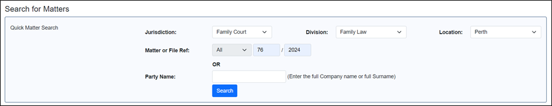
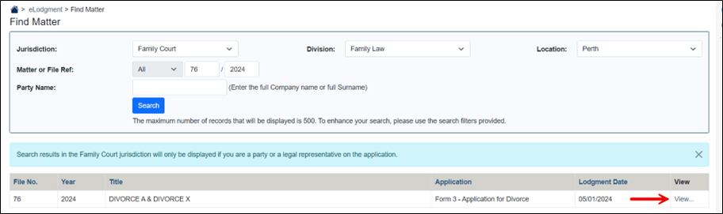
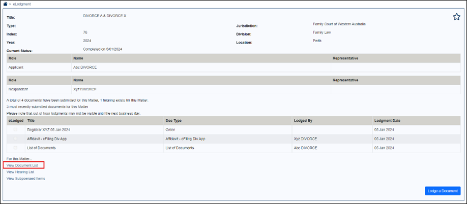
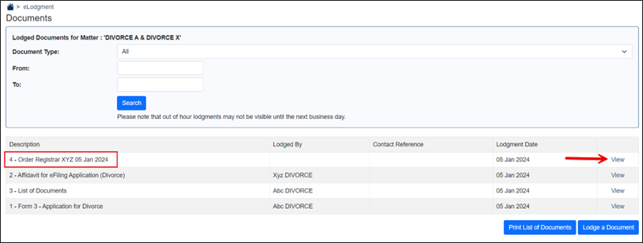
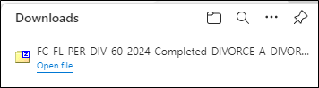

|
|
eCourts Portal of Western Australia - Help: Search for Civil Matters/Files |

View Divorce Certificate
If you are the party on a Divorce Application, or the legal representative to a party on a civil matter, then there is an option to view one of your matters in the My Current Matters screen. Otherwise, civil matters can be searched for and viewed via the eLodgment Quick Matter Search.
01. After logging in, from the eCourts Portal home page click on eLodgment.
The eLodgment home page displays.
02. In the Search for Matters search enter the following details of the matter:
- Jurisdiction
- Division
- Location
- Matter or File Ref (Family Court file index number and year)
NOTE: Some matter types have been deliberately excluded from the search screen due to confidentiality reasons.

Or enter the full name of a party on a matter into the Party Name field.
03. Click Search.
The matter(s) displays in the Find Matter screen.

04. Click the View link in the View Matter column.
Details of the matter are displayed.

05. To view the full list of documents that were lodged on the matter including copy of Divorce Certificate click the View Document List link.
The Documents screen displays.

If there are a lot of documents on the matter use the search criteria to help find the one you wish to view.
06. To view the PDF version of one of the documents click the View link next to the relevant one.

The PDF downloads to your browser.
Why can’t I find a matter through the Quick Matter Search?
The ‘Quick Matter Search’ is for searching for non-criminal matters. However, the jurisdictions have different business rules that determine who can search for what:
- Family Court - only parties and legal representatives are allowed.
NOTE: In addition to the above rules a Court/Tribunal can also manually block a particular party/legal representative from viewing a particular matter.